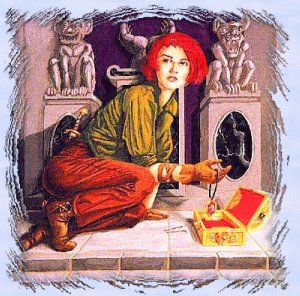

[ Home | Comments | Drakkar Links ]
 |
ThievesBy Mongoose |
Starting a Thief character from scratch:
Roll stats of Luck, Will and Charisma. The rest is fixable with pots.
Dedicate to thief trainer and full pay in thief skill.
Get the best armor you can, a thief's normal running gear is full plate and 2 dex type
robes. ie. sliths, bnrs, assassin cloaks. As baby thief you can wear plate, yellow, etc.
Go to level one and begin skilling your thief to make skill 12. Never leave level one or rest so you can be a level 1 skill 12 thief. This is boring but pays off later when you reach higher skill levels.
Fully pay your trainer every opportunity.
Notes on stealing:
level 1 - RatBurrow: Steal 10 times and then kill with a weapon.
Notes on running a thief:
Skill 1-9 - Can hide from crits in -1 through -4 definitely 2 spaces minimum going past -4
(see Thief Disciplines below).
Skill 12 and below - Stay out of Lairs.
Skill 12-13 - Can hide from M-3 crits and 2 spaces from M-4 crits.
Skill 14-15 - Can start attempting multi and can hide from most dragons except multi and
BD.
Skill 16 - Can hide in multi 1 hex from dragons. Can hide 2 hexes from BD. (Do not tempt
Dragons)
Skill 17 - Backstab base damage is 10 times normal.
Notes on Hiding:
Darkness is your friend, use it all the time when moving across large open spaces.
Illusion rings are good also to make walls and move to them if space is to big to cross in
one round.
You can move across an open space as long as you end up near a wall in that move.
A possible game bug is if you are stunned and dance into an open spot, hide will not break
if you end up near a hiding obstacle when you come out of stun.
Hiding obstacles:
Forest if the trees obstruct your vision you can hide by them.
Ice Flows you can not see where you can hide so use darkness.
Darkness can be dispelled with an area affect spell such as fireball.
Thief Weapons:
Training a thief can skill quickly with all weapons. Weapons affect ability to hit only in
backstabbing and will have different damage capability based on weapon skill not thief
skill.
Silver thief dagger - beginning dagger weapon at nork thief guild, +2 weapon.
M4 Katana - from Ninja lair, +5, Neutral aligned.
MA - Thief uses MA 2 skills below a regular MA.
Bows
PBow - Level 5 poison, can be enchanted, Neutral aligned.
M4 Longbows - Glowing +4, Neutral aligned.
KM4 Longbows - Silver +6, Proning.
KM5 Longbows - Silver, Glowing, +6, Proning.
KM5 crossbow - Silver glowing +5.
Throwing
Bully Daggers - Steal +3, Throwing.
M4 Tanto - Stunner lair, +5, Lightning, Neutral aligned.
KM5 RAxe - King Mino Lair, +4, Glowing, Proning, Throwing.
N10 dagger - Steal +5, Throwing.
Notes on backstabbing:
You can backstab with any object in hand, including keys, corpses, rings etc.
General coments on Thiefing
Think small. Your skill gain is equal on most levels. Skill until you get .01 Skill gain
per hour. Then leave that area.
Due to the above note, how does a thief make money???
Simple raiding lairs following parties of people around. If its on the ground and you
can't put it in your sack, Transmute it (thief transmute is weaker then a ments).
A high level thief can turn into the biggest money maker you have but it takes alot of care and feeding to get a thief in position to do so.
A thief requires a lot of time, so if you don't have patience make a fighter.
Agility is very important for Thieves. The higher a Thief's Agility, the greater success he will have in hiding, picking pockets, avoiding attacks and setting and disarming traps. A Thief can Backstab from hiding, which dramatically increases the amount of damage of the attack.
Higher level Thieves also gain the use of certain Disciplines like Mug and Trap. Unlike the Healer and Mentalist, the Thief draws on his health points (Hps) every time he forms a discipline.
Thief Skill Gains
The following lists some of the Skill Level gains for the Thief Profession. Thieves must train for their special Disciplines through the Volcano Town trainer.
Thief Disciplines
| Level | Command or Discipline | Description |
| 1 | Disarm | The Disarm command is used to attempt to disarm a trap not placed by the thief. All character classes may attempt to disarm a trap though some thievery skill is necessary. The higher the character's thieving skill, the better the chance of disarming the trap. Note that failures will sometimes activate the mechanism. |
| 1 | Sense | (See Ment Disciplines) |
| 1 | Hide | Thieves love to conceal themselves in shadows. You must be adjacent to a wall or some other concealing terrain to hide. Hide is dependent on thieving skill and further modified by the size of the items in you hand. The higher your thieving skill, the closer you can stand to another creature without being seen. It may take more than one try to find a good shadow, depending on your character's skill and agility. Also note that it is more difficult to hide the more injured you are. If you are successful, you will receive a message stating "you move into a nearby shadow." |
| 2 | Detect | (See Ment Disciplines) |
| 3 | Respirate | (See Ment Disciplines) |
| 8 | Backstab | Backstab is also a Thief command. The Thief character uses stealth to hide from an opponent, hoping to ambush with a sneak attack. You must attain the adept thief skill level (level 8) before you can attempt to backstab, and in order for it to have a chance of working, you must be hidden. A successful Backstab does more damage than a normal attack. |
| 8 | Door | (See Ment Disciplines) |
| 10 | Mug | At the swift thieving skill level (level 10) you can move and steal in the same combat round through the use of the Mug command. This ability enables you to rough up a target and go for a quick pilfer in a single round. Note that the distance a thief can move during this process is directly proportional to the thievery skill of the mugger. |
| 10 | Transmute | (See Ment Disciplines) |
| 12 | Infravision | (See Ment Disciplines) |
| 12 | Poison | (See Healer Disciplines) |
| 14 | Traps | The nefarious thief can Set and Remove traps. Traps of various strengths may be purchased from both the thieves guild and various shady merchants in the kingdom. But gold is not enough! You need the right thieving skill for a particular trap. The salesman will not sell you a trap you do not have the skill to set. To place a trap, you must first purchase the desired type of trap, and then choose a location where the trap will be set. |
| 15 | Reveal | Through the use of this discipline the thief is able to view objects through most any form of natural cover (forest, water, ice). Objects will be displayed as if they rested upon open ground. |
| 15 | Trapsack | Using this discipline the thief forms an energy barrier around the target sack which will deter many thieves from attempting to "borrow" items and coins from the protected player. The odds of the discipline affecting a potential pilferer are proportional to the difference between the power of the discipline and the thievery skill level of the pilferer. |
| 17 | Limited Invisiblity | (See Ment Disciplines) |